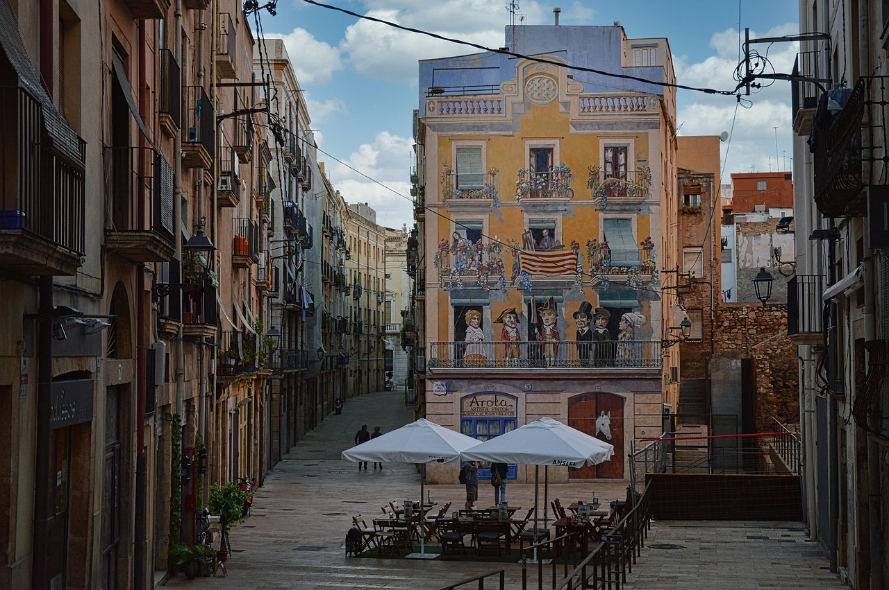

En la reciente edición del Coffee Fest de Madrid, se reveló la lista de las 100 mejores cafeterías a nivel mundial. España destaca con cuatro establecimientos en este ranking: Hola Coffee Lagasca (Madrid) en el puesto 12, Nomad Frutas Selectas (Barcelona) en el 25, D'Origen Coffee Roasters (Barcelona) en el 55 y Kima Coffee (Málaga) en el 80. Estos locales han sido reconocidos por su calidad, innovación y compromiso con la sostenibilidad. 